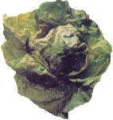

Homocysteine, an amino acid present in everyone's body, has been coming under increased scrutiny over the last two decades for its possible role in coronary heart disease. Although not as well known as cholesterol, homocysteine has been found in several scientific studies to have similar effects on blood vessels as high levels of the "bad" cholesterol, LDL.
Donald W. Jacobsen, M.D., one of the first researchers to document the relationship between hyperhomocysteinemia (high homocysteine levels) and coronary disease, says high levels are found in 30 to 50 percent of all people with coronary disease and are particularly high (50 percent) in postmenopausal women.
Homocysteine levels seem to naturally increase with age, but there are other danger categories for the disease such as poor diet, high coffee consumption (decaf won't save you, either) chronic alcoholism, some disease states and genetic factors. By far, though, Jacobsen says high levels of homocysteine can be controlled by consuming five vitamins: niacin, B-6, B-12, folic acid and riboflavin (B-2). Getting the proper allotments of these vitamins can keep most people from developing the condition and can also lower homocysteine levels in those already affected.
Some of the vitamin group are already added by law to fortified flour, and a push is underway to have B-12 added to federal requirements. in the meantime, getting these vitamins is as easy as moving your fork from you plate to your mouth. The entire gamut of homocysteine-fighting vitamins can be found in green leafy vegetables, citrus fruits, fish and dairy products. All the vitamins are also available in over-the-counter supplements as well. Vegetarians and vegans, especially, need to take a B-12 supplement, as most of this vitamin comes from animal products.
Although some medical professionals dismiss the research on homocysteine, what's to lose with an ounce of prevention? The treatment will create no strain on your pocketbook, has no harmful side effects and requires no expensive prescription drugs or regimented diets. It's just plain, old healthy eating.
Now go crunch your kale.
-By Sarah Beth Cavanah
|
 |
|
|